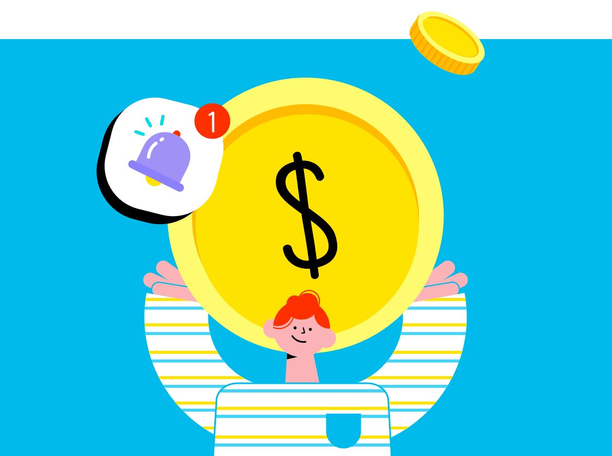

달러, 해외 나갈 때만
사는 건가요?

'누구나 쉽게 할수있는 '달러 재테크'
저금리가 지속되는 상황에 단순히 은행의 예,적금만으로 자산을 늘리는 것이 어려워졌죠.
그렇다면 요즘 자산가들은 어떻게 자산을 배분하여 재테크를 하고 있을까요?
자산가들의 투자 포트폴리오에 빠지지 않는 게 바로 '미국 달러'입니다.
조금은 낯선 투자자산으로의 달러(USD), Q&A로 쉽게 알아봐요.
-
환율이 올랐다? 내렸다? 어떤 의미인가요?
원/달러 환율을 기준으로 1달러=1,000원이었던 환율이 1달러=1,100원으로 올라갔다면 우리나라 원화 가치는 그만큼 내려가죠. 환율이 올라간거에요.
원/달러 환율을 기준으로 1달러=1,000원이었던 환율이 1달러=900원으로 내려갔다면 우리나라 원화 가치는 그만큼 올라가죠.
환율이 내려간거에요.환율상승 하락 - 집에서 등록금을 받는 유학생
환율
상승- 해외지사에서
근무하는 회사원 - 애플 구글 등
해외주식 보유자
- 해외지사에서
근무하는 회사원 - 애플 구글 등
해외주식 보유자
환율
하락- 집에서 등록금을 받는 유학생
달러를 거래하면서 발생한 이익과 손해를 각각 환차익, 환차손이라고 해요. 환테크의 기본은 환율이 내려갈 때 달러를 사놓았다가 환율이 오를 때 팔면 환차익이 발생해 수익이 생긴다는 거에요.
탐나는 환차익, 안정적이면서 쏠쏠한 수익까지!
안정적인 재테크 수단인 환테크의 장점!
환차익은 원천징수 및 금융소득 종합과세 대상이 아니기 때문에 환율이 낮을 때 투자해서 생긴 환차익으로 인한 수익은 세금이 부과되지 않아요.
이렇게 재테크와 절세가 동시에 가능한 환테크, 탐낼 만 하네요.
환테크. 하나은행과 함께...
외화통장 만들기
우선 하나은행에서 외화통장을 만들어요.
은행을 갈 시간이 없으시죠?
외화통장은 하나원큐 앱에서 3분컷! 쉽고 빠르게 만들 수 있어요.
환율 동향 파악하기
하나은행의 환율 리포트로 대략적인 동향을 파악할 수 있어요.
이제 희망(목표)환율이 정해지셨다면 환율 알림서비스와 외환매매 예약 서비스를 통해 목표환율에 달러를 사고팔 수 있어요.
환율(Spread) 우대 공략하기
은행의 환율(Spread) 우대를 적극적으로 공략하세요.
환차익을 이용해 환테크를 하려면 달러를 사고파는 거래를 해야 해요.
거래 시 은행은 매매기준율에서 일정 비율의 수수료가 부과된 환율을 적용하는데요.
이 때 거래하는 은행의 고객등급이나 실적, 또는 이벤트 등을 통해 제공되는 환율(Spread) 우대를 받으면 환전 수수료를 상당히 줄일 수 있어요.
-
사놓고 떨어지면 어쩌지?
고민하지 마세요.
주식과는 달리 환율은 상승과 하락을 반복하며 일정한 주기를 갖고 움직이기 때문에 떨어졌을 때 팔지 않으면 손해도 없다는 점이 바로 달러 투자의 또 하나의 장점이에요. -
달러 현찰로 환전해두시나요?
실제 사용 목적이 아니라면 굳이 달러 현찰로 사 둘 필요가 없어요.
환차익이 목적이라면 외화예금에 달러를 사두면 현찰환율(현찰 사실 때/파실 때)이 아닌 전신 환율(송금 보낼 때/받을 때)로 달러를 사고팔 수 있어 더 유리하답니다.